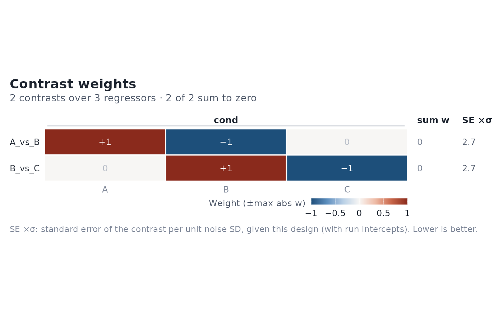

Shows every contrast defined on an event_model as a row of weights over
all design-matrix columns, in design order and grouped by term, so it
lines up column-for-column with design_map(). Weights use the package's
diverging palette, symmetric about zero up to the largest absolute weight
across all contrasts (stated in the legend), and every weight is printed:
zero weights sit at the neutral midpoint with a faint "0", so exclusion
reads as an explicit weight rather than a missing cell.
Usage
# S3 method for class 'event_model'
plot_contrasts(
x,
absolute_limits = FALSE,
rotate_x_text = TRUE,
scale_mode = c("auto", "diverging", "one_sided"),
coord_fixed = FALSE,
annotate = NULL,
title = "Contrast weights",
subtitle = NULL,
...
)Arguments
- x
An
event_modelwith contrasts defined in its terms.- absolute_limits
Logical; if
TRUE, fix the fill scale at [-1, 1]. Otherwise it is symmetric about 0 up to the largest abs(weight).- rotate_x_text
Logical; angle column labels when they would overlap.
- scale_mode
"auto"or"diverging"(both diverging and symmetric about 0), or"one_sided"(neutral-to-warm magnitude scale from 0, for non-negative weights).- coord_fixed
Logical; if
TRUE, keep cells square. The default (FALSE) uses shallow rows of fixed height.- annotate
Logical or
NULL; print weights in the cells.NULL(default) prints them when there are at most 40 columns.- title, subtitle
Plot title and subtitle.
- ...
Passed to
ggplot2::geom_tile().
Details
Two columns in the right margin check each row. "sum w" is the sum of the weights; non-zero sums are shown in a warning colour. The SE multiplier is sqrt(c' (X'X)^+ c), with X the design matrix plus one intercept per run: the standard error of the contrast estimate per unit of noise standard deviation, given this design (lower is better). Contrasts that are not estimable from the design are marked "not est.". F-contrasts appear as one row per component, numbered under the contrast name, each with its own values.
Examples
des <- data.frame(
onset = c(0, 10, 20, 30, 40, 50),
run = 1,
cond = factor(c("A", "B", "C", "A", "B", "C"))
)
sframe <- fmrihrf::sampling_frame(blocklens = 60, TR = 1)
cset <- contrast_set(
A_vs_B = pair_contrast(~ cond == "A", ~ cond == "B", name = "A_vs_B"),
B_vs_C = pair_contrast(~ cond == "B", ~ cond == "C", name = "B_vs_C")
)
emod <- event_model(onset ~ hrf(cond, contrasts = cset),
data = des, block = ~run, sampling_frame = sframe)
plot_contrasts(emod)
